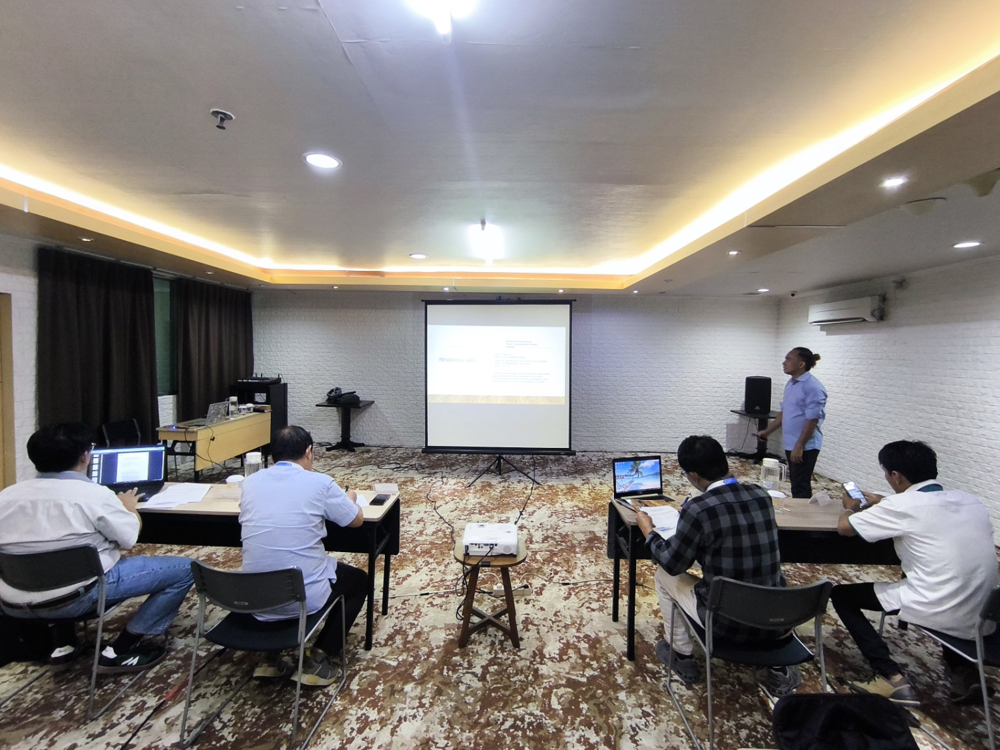

Training & Assessment
Professional Trainer, Master Trainer, Workplacement Assessor, dan Asesor Kompetensi.
Workplacement Assessor · Professional Trainer · Public Relations · Professional Guide · MICE · Rope Access Technician · Caver · Canyoner
25 tahun pengalaman dalam pelatihan, asesmen kompetensi, komunikasi, event, dan aktivitas petualangan.
Lihat Portofolio
Saya Yudha Wira, profesional multidisiplin di bidang pelatihan, asesmen kompetensi, public relations, MICE, dan aktivitas petualangan. Saya menggabungkan keahlian teknis, komunikasi, keselamatan, dan pengembangan sumber daya manusia.
Professional Trainer, Master Trainer, Workplacement Assessor, dan Asesor Kompetensi.
Komunikasi, koordinasi, event support, dan pengelolaan kegiatan.
Rope Access Technician, Professional Guide, Caver, dan Canyoner.
Pilihan pengalaman dan proyek. Buka dokumentasi foto terkait melalui galeri.
 2026 · Rope Access
2026 · Rope AccessTeknisi · Pengawas · Rescue
2026 · Professional TrainingTrainer · Technical Training · Assessment
 2024 · Outdoor & Adventure
2024 · Outdoor & AdventureProfessional Guide · Technical Outdoor Activity
Dokumen sertifikasi dikelompokkan berdasarkan penerbit dan bidang kompetensi.
Sertifikat BNSP untuk asesmen dan kompetensi profesional.
Sertifikat pelatihan dan instruktur dari Lembaga/Instansi terkait.
Sertifikat instruktur dan kompetensi kegiatan outdoor dan petualangan.
Sertifikat lain yang belum termasuk dalam tiga kategori di atas.
Kumpulan dokumentasi profesional, training, rope access, adventure, project, dan certification.
Testimoni dari klien, peserta pelatihan, dan mitra kerja akan ditampilkan di sini setelah melalui proses moderasi.
Testimoni yang dikirim akan ditinjau terlebih dahulu sebelum ditampilkan di website.
Bagikan pengalaman Anda. Cukup isi formulir singkat di bawah ini.